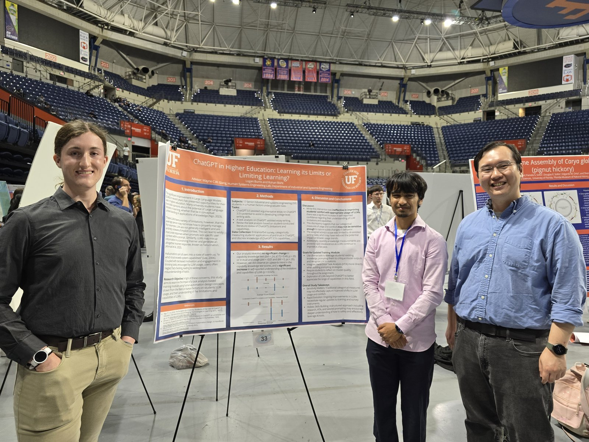

APR 26, 2025
Spring Undergraduate Research Symposium

Pictured above is the poster we presented at the Spring Undergraduate Research Symposium on April 8th with my classmate, Rohan.
Our poster contained the results of our statistical analysis on usage trends and perspectives held by Senior students on LLM usage in educational settings, specifically as an agent of assisting in assignment completion. While not directly associated with my major, it definitely opened my eyes to the versatility and value of statistical analysis in identifying trends and shifts in subject perspectives. I have enjoyed my time working with Dr. Wayne Giang this semester, and I wish his lab the best.